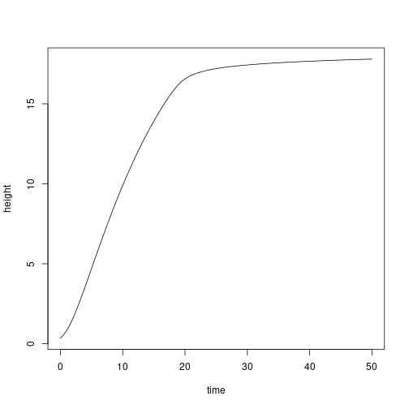

Individual-level properties
Rich FitzJohn
Daniel Falster
2016
Source:vignettes/individuals.Rmd
individuals.RmdBackground
Any plant model defines a strategy that implements a system of equations describing the change of one or more characteristics (state variables) of individuals. These individuals are aggregated as cohorts of different ages that compete within a patch.
This vignette illustrates the how to model the dynamics of individuals and the analysis used to generate figure (Fig 2) in the manuscript. Throughout we use the FF16 strategy, describing the Falster Fitzjohn model of light competition in forest stands, however an equivalent Individual component of the model will be present in all strategies.
Individuals
Individuals are constructed with the FF16_Individual function. That function takes as its only argument a “strategy” object; the default is FF16_Strategy, but alternative strategies can be provided (see below). The “strategy” object contains all the physiological underpinning the dynamics of individual plants and entire meta-populations.
indv <- FF16_Individual()Individuals are an R6 class, and have a number of elements and fields that can be accessed:
indv## <Individual<FF16,FF16_Env>>
## Inherits from: <Individual>
## Public:
## .ptr: externalptr
## aux: function (name)
## aux_names: active binding
## aux_size: active binding
## clone: function (deep = FALSE)
## compute_competition: function (h)
## compute_rates: function (environment)
## establishment_probability: function (environment)
## initialize: function (ptr)
## internals: active binding
## lcp_whole_plant: function ()
## mortality_probability: active binding
## net_mass_production_dt: function (environment)
## ode_names: active binding
## ode_rates: active binding
## ode_size: active binding
## ode_state: active binding
## rate: function (name)
## reset_mortality: function ()
## set_state: function (name, v)
## state: function (name)
## strategy: active binding
## strategy_name: active bindingThings labelled ‘active binding’ are “fields” and can be read from and (sometimes) set:
indv$state("height")## [1] 0.3441948
indv$set_state("height", 10)
indv$state("height")## [1] 10
indv$state("fecundity")## [1] 0
indv$state("mortality")## [1] 0Height, fecundity and mortality are the three key variables of the FF16 strategy, each propagated by the internal system of differential equations:
indv$ode_state## [1] 10 0 0 0 0While we can get and set variable state for a single individual, computing the rates of change requires information about the environment an individual inhabits. In the FF16 model, individuals compete through a shared light environment, described in terms of canopy openness. The function fixed_environment creates an environment that has the same canopy openness (here 100%) at all heights. Note: The indv individual does not affect this light environment.
env <- FF16_fixed_environment(1.0)In the FF16 model, the compute_rates method computes net mass production for the individual, and from that demographic rates:
indv$ode_rates## [1] NA NA NA NA NA
indv$compute_rates(env)
indv$ode_rates## [1] 9.231625e-01 1.002618e-02 6.905594e-05 3.132290e-04 1.687620e+00While we have focused on three key variables, height, mortality and fecundity, the FF16 model describes variable for five characteristics. The name vector of these variables is available via
indv$ode_names## [1] "height" "mortality" "fecundity" "area_heartwood" "mass_heartwood"There is also a function to directly access particular rates:
indv$rate("height")## [1] 0.9231625Individuals are a type of reference object. They are different to almost every other R object you regularly interact with in that they do not make copies when you rename them, meaning changes to one will be reflected in another.
indv2 <- indv
indv2$set_state("height", 1)
indv2$state("height")## [1] 1
indv$state("height") # also 1!## [1] 1There’s not actually that much that can be done with Individual objects; they’re designed to be small and light to work well with the larger simulation code that does not particularly care about most of the internal calculations.
Growing plants
Rather than setting the size of Individuals to given values, it will often be required to grow them to a size. In the FF16 model, this allows us to compute seed output (integrated over the plant’s lifetime) stem diameter, survival, etc; basically everything except for height.
It’s possible to directly integrate the equations exposed by the Individual, using the ode_state field, compute_rates method and ode_rates field. For example, we can use the R package deSolve:
# deSolve wrapper of Individual ODEs
derivs <- function(t, y, individual, env) {
individual$ode_state <- y
individual$compute_rates(env)
list(individual$ode_rates)
}
# initialise indiidual, timesteps and initial conditions
indv <- FF16_Individual()
tt <- seq(0, 50, length.out=101)
y0 <- setNames(indv$ode_state, indv$ode_names)
# solve and plot
yy <- deSolve::lsoda(y0, tt, derivs, indv, env=env)
plot(height ~ time, yy, type="l")
Alternatively, it might desirable to grow a Individual to a particular size. We could interpolate from the previous results easily enough. E.g., to find a plant with height of 15 m:
h <- 15.0that happened approximately here:
t <- spline(yy[, "height"], yy[, "time"], xout=h)$yInterpolate to find the state:
y <- apply(yy[, -1], 2, function(y) spline(yy[, "time"], y, xout=t)$y)
indv2 <- FF16_Individual()
indv2$ode_state <- y
indv2$compute_rates(env)Plant is expected height:
indv2$state("height")## [1] 15And at this height, here is the total seed production:
indv2$state("fecundity")## [1] 289.9376To make this type of operation easier, we provide the function grow_plant_to_time
res <- grow_plant_to_time(FF16_Individual(), tt, env)Here is the result using the internal ODE solver (black line), plotted against the result obtained from using deSolve above (grey dots):
plot(height ~ tt, res$state, type="l", las=1,
xlab="Time (years)", ylab="Height (m)")
points(height ~ time, yy, col="grey", cex=.5)
Completing the set, plant also provides a function for growing individuals to a particular size; grow_plant_to_size. This takes any size measurement in the individuals and can grow the individuals to that size. So, for height:
# create a sequence from the initial size to height at maturity
indv <- FF16_Individual()
heights <- seq(indv$state("height"), indv$strategy$hmat, length.out=20)
res <- grow_plant_to_size(indv, heights, "height", env)This returns a vector of times; this is when the heights were achieved
res$time## [1] 0.000000 1.545681 2.523393 3.365033 4.155087 4.926508 5.696593 6.476387 7.274127 8.096757 8.950785 9.842785 10.779771 11.769706 12.821689 13.946774 15.158668 16.476692 17.957500 20.137320A matrix of states, showing the state of related characteristics:
head(res$state)## height mortality fecundity area_heartwood mass_heartwood
## [1,] 0.3441948 0.00000000 0.000000e+00 0.000000e+00 0.000000e+00
## [2,] 1.1995465 0.01545682 7.754892e-20 1.280271e-07 6.544158e-05
## [3,] 2.0548958 0.02523396 5.654011e-18 9.826616e-07 8.617440e-04
## [4,] 2.9102485 0.03365038 2.252986e-16 3.837305e-06 4.790943e-03
## [5,] 3.7656006 0.04155098 6.750246e-15 1.081677e-05 1.755419e-02
## [6,] 4.6209512 0.04926531 1.710259e-13 2.510437e-05 5.019027e-02And a list of individualss
res$plant[[10]]## <Individual<FF16,FF16_Env>>
## Inherits from: <Individual>
## Public:
## .ptr: externalptr
## aux: function (name)
## aux_names: active binding
## aux_size: active binding
## clone: function (deep = FALSE)
## compute_competition: function (h)
## compute_rates: function (environment)
## establishment_probability: function (environment)
## initialize: function (ptr)
## internals: active binding
## lcp_whole_plant: function ()
## mortality_probability: active binding
## net_mass_production_dt: function (environment)
## ode_names: active binding
## ode_rates: active binding
## ode_size: active binding
## ode_state: active binding
## rate: function (name)
## reset_mortality: function ()
## set_state: function (name, v)
## state: function (name)
## strategy: active binding
## strategy_name: active binding
res$plant[[10]]$state("height")## [1] 8.042356
heights[[10]]## [1] 8.042356Comparing individuals
With all relevant components in place, let’s look at growth trajectories of individuals of two species that differ in their trait values. This presented in Fig. 2a of the paper.
Note that we’re using an alternative way of specifying strategies here, to trigger our “hyper-parameterisation” approach. This allows us to relate the values of one trait, here leaf-mass area (LMA), to other traits that form fundamental trade-offs in plant physiology. This may be simplified in future, but currently the “hyper-parameterisation” function resides on the params object.
First, we load the FF16 strategy pre-populated with a set of default parameters
params <- scm_base_parameters("FF16")Then we can use the params object to set a low LMA (“fast growth”) species:
s1 <- strategy(trait_matrix(0.0825, "lma"), params)and a high LMA (“low growth”) species:
s2 <- strategy(trait_matrix(0.2625, "lma"), params)In the FF16 model, LMA is related to leaf turnover (k_l) and the ratio of dark respiration to leaf mass (r_l):
## [[1]]
## [[1]]$lma
## [1] 0.0825
##
## [[1]]$k_l
## [1] 2.03812
##
## [[1]]$r_l
## [1] 476
##
##
## [[2]]
## [[2]]$lma
## [1] 0.2625
##
## [[2]]$k_l
## [1] 0.2816144
##
## [[2]]$r_l
## [1] 149.6We use these specific strategies to create Individuals:
indv1 <- FF16_Individual(s1)
indv2 <- FF16_Individual(s2)Then, collect information of their characteristic variables over a sequence of heights. Note that range of heights are different for the two Individuals because they have different starting heights. The lower LMA of s1 allows it to achieve a greater initial height for given seed mass.
heights1 <- seq(indv1$state("height"), s1$hmat, length.out=100L)
heights2 <- seq(indv2$state("height"), s2$hmat, length.out=100L)
dat1 <- grow_plant_to_height(indv1, heights1, env,
time_max=100, warn=FALSE, filter=TRUE)
dat2 <- grow_plant_to_height(indv2, heights2, env,
time_max=100, warn=FALSE, filter=TRUE)
plot(dat1$trajectory[, "time"], dat1$trajectory[, "height"],
type="l", lty=1,
las=1, xlab="Time (years)", ylab="Height (m)")
lines(dat2$trajectory[, "time"], dat2$trajectory[, "height"], lty=2)
legend("bottomright", c("Low LMA", "High LMA"), lty=1:2, bty="n")
We cam see each species fares under lower light:
env_low <- FF16_fixed_environment(0.5)
dat1_low <- grow_plant_to_height(indv1, heights1, env_low,
time_max=100, warn=FALSE, filter=TRUE)
dat2_low <- grow_plant_to_height(indv2, heights2, env_low,
time_max=100, warn=FALSE, filter=TRUE)
cols <- c("black", "#e34a33")
plot(dat1$trajectory[, "time"], dat1$trajectory[, "height"],
type="l", lty=1,
las=1, xlab="Time (years)", ylab="Height (m)")
lines(dat2$trajectory[, "time"], dat2$trajectory[, "height"], lty=2)
lines(dat1_low$trajectory[, "time"], dat1_low$trajectory[, "height"],
lty=1, col=cols[[2]])
lines(dat2_low$trajectory[, "time"], dat2_low$trajectory[, "height"],
lty=2, col=cols[[2]])
legend("bottomright",
c("High light", "Low light"), lty=1, col=cols,
bty="n")
The height growth rate is the derivative of height with respect to time - the slope of the plot above. It is really the core quantity in the model; the actual heights are computed by solving the set of ODEs that includes height growth rate.
Growth rate with respect to height shows a hump-shaped pattern that is affected by both traits and by light environment. To extract this information from the trajectories takes a little more work though.
Here is an inidivdual from part way through one run
indv <- dat1$plant[[50]]Here is the set of ODE state variables:
setNames(indv$ode_state, indv$ode_names)## height mortality fecundity area_heartwood mass_heartwood
## 8.412120e+00 7.797210e-02 9.998839e-08 3.403727e-04 1.262008e+00And the set of rate variables
setNames(indv$ode_rates, indv$ode_names)## height mortality fecundity area_heartwood mass_heartwood
## 9.530474e-01 1.003019e-02 3.243850e-07 1.780143e-04 8.068135e-01…however, the rates might not be correct. They are whatever was left by the ODE stepper when it was advancing the plant, so it’s best to update them:
indv$compute_rates(dat1$env)
setNames(indv$ode_rates, indv$ode_names)## height mortality fecundity area_heartwood mass_heartwood
## 9.530474e-01 1.003019e-02 3.243850e-07 1.780143e-04 8.068135e-01(in this case they are the same because the light environment is unchanging, but that not be the case generally)
Alternatively, we can access the height growth rate via the internals, which is the same as accessing directly from the ODE rates but more explicit:
indv$rate("height")## [1] 0.9530474
indv$ode_rates[[1]]## [1] 0.9530474Collecting height growth for high and low LMA individauls in high and low light environments:
f <- function(x) x$rate("height")
dhdt1 <- sapply(dat1$plant, f)
dhdt2 <- sapply(dat2$plant, f)
dhdt1_low <- sapply(dat1_low$plant, f)
dhdt2_low <- sapply(dat2_low$plant, f)
plot(dat1$time, dhdt1, type="l", lty=1,
las=1, xlab="Time (years)", ylab="Height growth rate (m / yr)")
lines(dat2$time, dhdt2, lty=2)
lines(dat1_low$time, dhdt1_low, lty=1, col=cols[[2]])
lines(dat2_low$time, dhdt2_low, lty=2, col=cols[[2]])
legend("topright",
c("High light", "Low light"), lty=1, col=cols,
bty="n")
Alternatively, change in height plotted against height itself:
ylim <- c(0, max(dhdt1))
plot(dat1$state[, "height"], dhdt1, type="l", lty=1,
las=1, xlab="Height (m)", ylab="Height growth rate (m / yr)", ylim=ylim)
lines(dat2$state[, "height"], dhdt2, lty=2)
lines(dat1_low$state[, "height"], dhdt1_low, lty=1, col=cols[[2]])
lines(dat2_low$state[, "height"], dhdt2_low, lty=2, col=cols[[2]])
legend("topright",
c("High light", "Low light"), lty=1, col=cols,
bty="n")
The growth rates vary with both size and light environment (see above).
indv <- FF16_Individual()
indv$set_state("height", 10)
indv$compute_rates(FF16_fixed_environment(1.0))
indv$rate("height") # in full light## [1] 0.9231625
indv$compute_rates(FF16_fixed_environment(0.5))
indv$rate("height") # in 1/2 light## [1] 0.4522332At some point the individual cannot maintain positive carbon balance and therefore cannot grow; for example at 25% canopy openness
indv$compute_rates(FF16_fixed_environment(0.25))
indv$rate("height")## [1] 0The light level at which carbon gain becomes zero is the “whole plant light compensation point”.
openness <- seq(0, 1, length.out=51)
lcp <- 0.299Height growth rate increases in a saturating fashion with increasing canopy openness from the light compensation point.
f <- function(x, indv) {
env <- FF16_fixed_environment(x)
indv$compute_rates(env)
indv$rate("height")
}
x <- c(lcp, openness[openness > lcp])
plot(x, sapply(x, f, indv), type="l", xlim=c(0, 1),
las=1, xlab="Canopy openness", ylab="Height growth rate (m / yr)")
points(lcp, 0.0, pch=19)